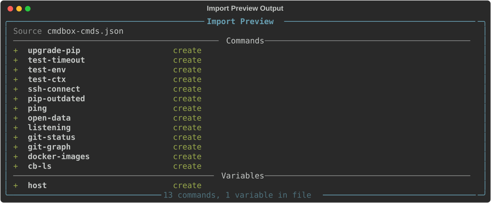

Import & Export¶
The import and export subcommands let you move commands and variables between
machines, share them with teammates, or keep a backup of your CmdBox database. Data is
written to and read from plain JSON files, so exports are easy to inspect, edit by hand,
or commit to a repository.
The available subcommands are:
export¶
The export command group writes commands and/or variables to a JSON file. There are
three subcommands depending on what you want to export: cmds,
vars, or all.
Profile scoping¶
Every export command accepts --profile (or -p) to choose which profile's commands are exported, and --var-profile
to choose which profile any <var:> dependencies are resolved from. Both default to whichever profile is currently
active for that purpose. export vars only accepts --var-profile, there's no command axis to it.
The exported file records which profiles were used, via command_profile and variable_profile fields at the top
level. These are purely informational, import does not read them, the destination profile is always chosen explicitly
at import time.
Dependencies are included automatically¶
If a command references another command with <cmd:name>, or a variable with
<var:name>, that reference won't resolve correctly on the receiving end unless the
referenced item is included too. To prevent broken exports, export cmds and
export vars always pull in everything a requested item depends on, transitively.
> cb export cmds deploy
Export Complete
Saved to: ./cmdbox-cmds-2026-06-17.json
Commands
deploy
build-image (dependency)
login-ecr (dependency)
Variables
registry-url (dependency)
2 commands, 1 variable exported
Here, requesting deploy pulled in build-image and login-ecr because deploy
references them, and registry-url because build-image references it. Items pulled in
this way are labeled (dependency) so it's clear they weren't explicitly requested.
Note
If a command or variable can't be found, it's skipped and a warning is printed. The rest of the export still proceeds.
Output location¶
By default, the export is saved to the current directory with a generated filename, such
as cmdbox-cmds-2026-06-17.json. Use the --output (or -o) flag to choose a different
location.
If the path given to --output is an existing directory, the generated filename is placed
inside it. If it's a filename, the export is written there directly.
export cmds¶
Exports commands to a JSON file. With no arguments, every command in your database is exported.
To export specific commands (along with their dependencies), provide their aliases.
To export commands by tag instead, use the --tag flag. This is ignored if any aliases
are also given.
--flatten¶
By default, <cmd:name> and <var:name> references inside a template are kept as
placeholders in the export, and the referenced items are included separately (as shown
above). The --flatten flag instead inlines every reference directly into the
template text, recursively, producing fully self-contained commands with no further
dependencies.
Tip
Use the default (non-flattened) export when you want the modular structure of your
commands preserved on import. Use --flatten when you want a single, portable
command that doesn't depend on anything else existing in the destination database.
export vars¶
Exports variables to a JSON file. With no arguments, every variable in your database is exported.
To export specific variables (along with any variables they reference), provide their names.
To export variables by tag instead, use the --tag flag. This is ignored if any names
are also given.
--flatten works the same way as it does for export cmds, expanding nested
<var:name> references into their final values instead of keeping them as references.
Warning
Variable values are included as-is. If any of your variables hold sensitive values, such as credentials or access tokens, review the exported file before sharing it.
export all¶
Exports every command and every variable in your database in a single file. This is the quickest way to take a full backup or move your entire setup to another machine.
--output and --flatten work the same as on the other export subcommands.
--flatten applies to both commands and variables.
import¶
The import command reads a JSON export file and adds its contents to your database.
It works with any file produced by export cmds, export vars, or export all — the
importer reads whichever commands and variables are present in the file.
Conflicts¶
If an item in the file already exists in your database (matched by alias for commands, or by name for variables), it's skipped by default and a warning is printed. Nothing about the existing item is changed.
To replace existing items instead, use the --overwrite flag.
Tags
Tags referenced by an imported command or variable are created automatically if they don't already exist in your database.
Profile scoping¶
By default, import writes into the currently active command profile. Use --profile to target a different one.
Conflict detection (skip vs. --overwrite) checks for existing items within the target profile only, an alias that
already exists in a different profile does not block the import.
Both commands and variables from a file land in the same target profile, import does not support splitting them
across two profiles the way export can pull from two source profiles.
--preview¶
To see what an import would do without making any changes, use the --preview flag.

This is useful for checking what's in a file before committing to it, especially when
combined with --overwrite to see exactly what would be replaced.
Circular references¶
If an export file contains a circular reference (for example, a command that depends on
itself through a chain of <cmd:...> references), the import is rejected before anything
is written, and the cycle is reported.
> cb import ./broken-export.json
Import rejected — circular reference detected: cmd:a -> cmd:b -> cmd:a
Tip
This shouldn't come up under normal use, but it can happen if a file was edited by hand. Fix the reference in the file and try the import again.